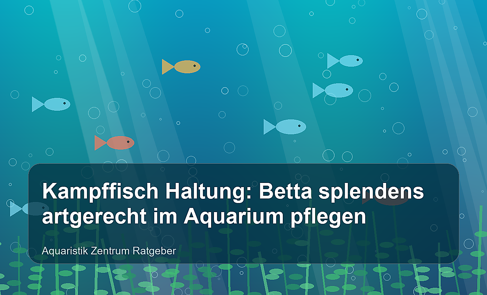

Warum Betta splendens besondere Ansprüche hat
Der Siamesische Kampffisch, wissenschaftlich Betta splendens, gehört zu den beliebtesten Aquarienfischen überhaupt. Seine intensiven Farben, die eleganten Flossen und sein neugieriges Verhalten machen ihn zu einem echten Blickfang. Gleichzeitig wird die Kampffisch Haltung häufig unterschätzt: Ein Betta ist kein Dekorationsfisch für kleine Kugelgläser, sondern ein territoriales Labyrinthfisch-Männchen mit klaren Bedürfnissen an Ruhe, Temperatur, Verstecke und Wasserqualität.
In der Natur leben die Vorfahren unserer Hochzucht-Bettas in flachen, warmen und oft stark verkrauteten Gewässern Südostasiens. Dort stehen sie nicht permanent in starker Strömung und sie müssen nicht mit hektischen Schwarmfischen konkurrieren. Genau diese Punkte sind für die artgerechte Pflege entscheidend. Wer seinem Kampffisch ein ruhiges, gut bepflanztes Aquarium bietet, wird mit Aktivität, kräftiger Färbung und spannendem Sozialverhalten belohnt.
Die passende Aquariumgröße
Für einen einzelnen Betta splendens empfehlen sich mindestens 25 bis 30 Liter, besser sind 40 bis 60 Liter. Ein größeres Becken ist nicht automatisch schwieriger, sondern oft stabiler: Temperatur und Wasserwerte schwanken weniger, Pflanzen wachsen besser und du hast mehr Möglichkeiten für Reviergrenzen. Wichtig ist nicht nur das Volumen, sondern auch die Struktur. Ein kahles 60-Liter-Becken kann stressiger sein als ein dicht bepflanztes 30-Liter-Becken.
Sehr hohe Aquarien sind für Kampffische weniger ideal, weil sie regelmäßig zur Wasseroberfläche schwimmen, um über ihr Labyrinthorgan Luft zu holen. Ein Standardbecken mit moderater Höhe, sicherer Abdeckung und vielen Pflanzen bis nahe an die Oberfläche ist daher perfekt. Die Abdeckung verhindert außerdem, dass der Betta springt, und hält die Luft über dem Wasser warm und feucht.
Wasserwerte und Temperatur
Betta splendens mag warmes, sauberes Wasser. Die Temperatur sollte dauerhaft zwischen 25 und 27 °C liegen. Kurzfristige Abweichungen sind meist kein Problem, dauerhaft kühles Wasser macht Kampffische jedoch träge und anfälliger für Krankheiten. Ein regelbarer Heizstab und ein gut ablesbares Thermometer gehören deshalb zur Grundausstattung.
Bei den Wasserwerten ist der Kampffisch relativ anpassungsfähig, solange Extreme vermieden werden. Ein pH-Wert zwischen 6,5 und 7,5 sowie weiches bis mittelhartes Wasser funktionieren in den meisten Aquarien gut. Viel wichtiger als perfekte Laborwerte sind stabile Bedingungen, regelmäßige Wasserwechsel und null nachweisbares Nitrit. Vor dem Einsetzen sollte das Aquarium vollständig eingefahren sein.
🛒 Technik für das Kampffisch-Aquarium
Ein leiser Filter mit sanfter Strömung, ein zuverlässiger Heizstab und ein Thermometer sind die Basis für stabile Bedingungen.
👉 Betta-Technik bei Amazon ansehenFilter und Strömung: sanft statt stark
Hochzucht-Kampffische mit langen Flossen sind keine kräftigen Dauerschwimmer. Zu starke Strömung zwingt sie permanent gegen den Wasserfluss anzukämpfen, was Stress verursacht und Flossenschäden begünstigen kann. Der Filter sollte deshalb gedrosselt oder so ausgerichtet werden, dass nur eine leichte Oberflächenbewegung entsteht. Schwammfilter, kleine Innenfilter mit Sprührohr oder Hamburger Mattenfilter sind gute Lösungen.
Trotz geringer Strömung muss die biologische Filterung zuverlässig arbeiten. Reinige Filtermaterial nie komplett unter heißem Leitungswasser, sondern spüle es bei Bedarf vorsichtig in einem Eimer mit Aquarienwasser aus. So bleiben die nützlichen Bakterien erhalten, die Ammonium und Nitrit abbauen.
Einrichtung: Pflanzen, Wurzeln und sichere Rückzugsorte
Ein artgerechtes Betta-Aquarium ist dicht strukturiert. Feinfiedrige Stängelpflanzen, Anubias, Javafarn, Cryptocorynen und Schwimmpflanzen geben Sicherheit und brechen Sichtlinien. Besonders Schwimmpflanzen wie Froschbiss oder Salvinia werden gern angenommen, weil sie gedämpftes Licht schaffen und dem Fisch Deckung an der Oberfläche bieten.
Wurzeln, glatte Steine und Laub können das Becken natürlich wirken lassen. Achte aber darauf, dass Dekoration keine scharfen Kanten hat. Die langen Flossen vieler Bettas reißen leichter ein als bei kurzflossigen Fischen. Auch Ansaugschlitze am Filter sollten so gesichert sein, dass der Fisch nicht hängen bleiben kann. Ein kleiner Ruheplatz nahe der Oberfläche, etwa ein breites Pflanzenblatt oder eine Betta-Hängematte, wird häufig genutzt.
Fütterung: abwechslungsreich und sparsam
Kampffische sind überwiegend carnivor, fressen also hauptsächlich tierische Nahrung. Hochwertiges Betta-Granulat kann die Basis bilden, sollte aber durch Frostfutter oder Lebendfutter ergänzt werden. Artemia, Mückenlarven, Daphnien und Cyclops sorgen für Abwechslung und fördern natürliches Jagdverhalten. Flockenfutter wird von vielen Bettas weniger gut angenommen und belastet bei Überfütterung schnell das Wasser.
Füttere lieber kleine Portionen, die innerhalb weniger Minuten gefressen werden. Ein erwachsener Betta braucht deutlich weniger Futter, als viele Einsteiger vermuten. Ein Fastentag pro Woche kann sinnvoll sein, besonders bei Tieren, die zu Verstopfung oder aufgeblähtem Bauch neigen. Entferne Futterreste zeitnah, damit die Wasserqualität stabil bleibt.
🛒 Hochwertiges Kampffisch-Futter
Proteinreiches Granulat und Frostfutter-Alternativen unterstützen Farbe, Kondition und Verdauung deines Bettas.
👉 Kampffisch-Futter bei Amazon entdeckenVergesellschaftung: allein ist oft besser
Die wichtigste Regel lautet: Männliche Kampffische werden einzeln gehalten. Zwei Männchen in einem Aquarium bekämpfen sich meistens heftig. Auch die dauerhafte Haltung von Männchen und Weibchen ist für normale Gesellschaftsaquarien nicht empfehlenswert, weil Paarungsdruck, Revierverhalten und Stress schnell zu Verletzungen führen können.
Ob ein Betta mit anderen Arten vergesellschaftet werden kann, hängt stark vom Charakter des Tieres, der Beckengröße und der Einrichtung ab. Ruhige Schnecken oder Zwerggarnelen können funktionieren, werden aber manchmal gejagt. Flossenzupfende oder hektische Fische wie manche Barben, Guppys mit auffälligen Flossen oder sehr aktive Schwärme sind ungeeignet. Für Einsteiger ist ein Artenbecken die sicherste und meist schönste Lösung.
Ein Kampffisch ist kein einsamer Fisch im menschlichen Sinn. Er profitiert nicht von Artgenossen im Becken, sondern vor allem von Ruhe, Verstecken und einem stabilen Revier.
Wöchentliche Pflege und Wasserwechsel
Ein kleines Betta-Aquarium bleibt nur dann dauerhaft gesund, wenn es regelmäßig gepflegt wird. Wechsle wöchentlich etwa 25 bis 40 Prozent des Wassers, abhängig von Beckengröße, Futtermenge und Pflanzenwuchs. Das Frischwasser sollte temperiert und bei Bedarf mit Wasseraufbereiter vorbereitet sein. Gleichzeitig kannst du abgestorbene Pflanzenteile entfernen und die Scheiben vorsichtig reinigen.
Mulm muss nicht steril abgesaugt werden, denn er enthält nützliche Mikroorganismen. Entferne jedoch sichtbare Futterreste und starke Schmutzansammlungen. Kontrolliere außerdem regelmäßig Flossen, Atmung, Schwimmverhalten und Appetit. Frühe Warnzeichen sind geklemmte Flossen, blasse Farben, Scheuern, Apathie oder weiße Beläge. Je früher du Veränderungen bemerkst, desto besser lassen sich Ursachen wie Stress, schlechte Wasserqualität oder falsche Temperatur beheben.
Häufige Fehler bei der Kampffisch Haltung
- Zu kleine Behälter: Vasen, Gläser und ungefilterte Mini-Cubes bieten keine stabilen Bedingungen.
- Zu starke Strömung: Ein Betta braucht Sauerstoff und Filterung, aber keinen kräftigen Wasserstrom.
- Kühle Temperaturen: Ohne Heizer fallen viele Zimmeraquarien nachts zu weit ab.
- Ungeeignete Mitbewohner: Hektische oder flossenzupfende Fische verursachen Dauerstress.
- Überfütterung: Zu viel Futter führt zu Verdauungsproblemen und belastet das Wasser.
- Scharfe Dekoration: Kunstpflanzen aus hartem Plastik und raue Steine können Flossen verletzen.
Checkliste für dein Betta-Aquarium
Bevor dein Kampffisch einzieht, sollte das Aquarium mindestens mehrere Wochen eingefahren sein. Die Temperatur liegt stabil bei 25 bis 27 °C, Nitrit ist nicht nachweisbar und der Filter läuft mit sanfter Strömung. Das Becken ist abgedeckt, reich bepflanzt und bietet ruhige Zonen an der Oberfläche. Passendes Futter, ein Eimer für Wasserwechsel, ein kleiner Schlauch, Wasseraufbereiter und ein Test für Nitrit gehören ebenfalls bereit.
Wenn du diese Punkte erfüllst, steht einer erfolgreichen Betta-Haltung wenig im Weg. Kaufe dein Tier möglichst bei einem seriösen Händler oder Züchter, achte auf klare Augen, intakte Flossen und aktives Verhalten. Lass den Fisch langsam an Temperatur und Wasser gewöhnen, statt ihn direkt umzusetzen.
🛒 Pflegezubehör für Wasserwechsel
Mit Schlauch, Wasseraufbereiter und Wassertests wird die regelmäßige Pflege einfacher und sicherer.
👉 Pflegezubehör bei Amazon ansehenGesundheit: Stress vermeiden und Symptome erkennen
Viele typische Betta-Probleme entstehen nicht durch einen einzelnen Fehler, sondern durch eine Kombination aus Stress, schlechter Wasserqualität und falscher Temperatur. Flossenfäule, weiße Beläge, geklemmte Flossen oder dauerhaftes Liegen am Boden sind Warnsignale. Prüfe in solchen Situationen zuerst die Basis: Temperatur, Nitrit, Wasserwechselrhythmus, Futtermenge und Strömung. Oft verbessert sich der Zustand bereits, wenn die Haltung korrigiert wird.
Bei langflossigen Zuchtformen solltest du besonders auf eingerissene Flossen achten. Kleine Risse heilen bei sauberem Wasser meist gut ab, während raue Dekoration oder starke Strömung immer wieder neue Schäden verursachen. Medikamente sollten nicht vorschnell eingesetzt werden. Beobachte genau, isoliere das Tier nur bei Bedarf und informiere dich über die konkrete Krankheit, bevor du behandelst. Vorbeugung ist bei Kampffischen fast immer erfolgreicher als spätere Therapie.
Kauf und Eingewöhnung
Ein gesunder Kampffisch wirkt aufmerksam, reagiert auf Bewegungen vor der Scheibe und zeigt klare, nicht verklebte Flossen. Vermeide Tiere, die apathisch in Bechern oder ungepflegten Verkaufsanlagen sitzen, stark abgemagert sind oder auffällige Beläge zeigen. Besonders robuste Tiere bekommst du häufig bei spezialisierten Züchtern, aber auch im Handel lohnt sich ein genauer Blick.
Für die Eingewöhnung schaltest du das Licht zunächst etwas herunter. Lege den Transportbeutel zum Temperaturausgleich ins Aquarium und gib anschließend portionsweise Aquarienwasser hinzu. Nach 20 bis 40 Minuten setzt du den Fisch mit einem kleinen Kescher um, ohne das Transportwasser vollständig ins Becken zu kippen. Danach braucht der Betta Ruhe. Füttere erst sparsam am nächsten Tag und beobachte, ob er neugierig sein neues Revier erkundet.
Saisonale Pflege und Urlaubszeit
Im Sommer kann ein kleines Aquarium schnell zu warm werden. Dann helfen kürzere Beleuchtungszeiten, ein offener Deckel unter Aufsicht oder ein kleiner Ventilator über der Wasseroberfläche. Im Winter ist dagegen ein zuverlässiger Heizer entscheidend, weil kalte Raumluft und Nachtabsenkung die Temperatur unbemerkt drücken können.
Für kurze Urlaube von wenigen Tagen ist ein gut genährter erwachsener Betta meist unproblematisch, solange das Becken stabil läuft. Futterautomaten sind nur sinnvoll, wenn sie vorher getestet wurden, denn Überfütterung ist riskanter als ein kurzer Fastenzeitraum. Vor der Abreise solltest du Wasser wechseln, Technik kontrollieren und eine vertraute Person nur mit klar dosierten Portionen füttern lassen.
Fazit
Die artgerechte Kampffisch Haltung ist nicht kompliziert, wenn die Grundlagen stimmen: warmes Wasser, sanfte Filterung, dichte Bepflanzung, hochwertige Nahrung und möglichst wenig Stress. Betta splendens ist ideal für Aquarianer, die ein kleines, ruhiges Artenaquarium gestalten möchten und Freude daran haben, ein einzelnes Tier genau zu beobachten. Verzichte auf Experimente mit Kugelgläsern oder unpassender Vergesellschaftung – dein Kampffisch wird es dir mit Gesundheit, Farbe und aktivem Verhalten danken.
Du planst ein Betta-Aquarium? Dann starte mit guter Vorbereitung, Geduld und einem Becken, das nicht nur schön aussieht, sondern wirklich zu den Bedürfnissen deines Kampffischs passt.